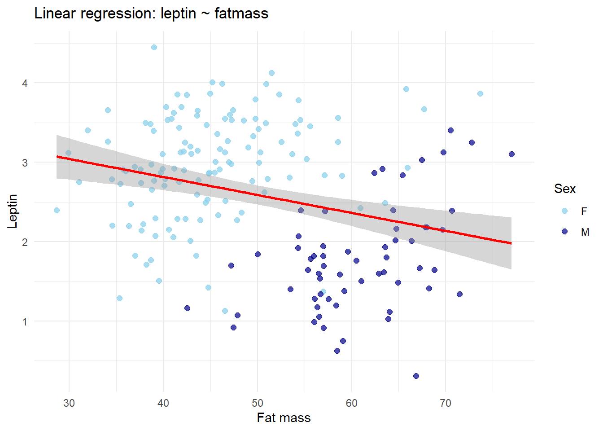
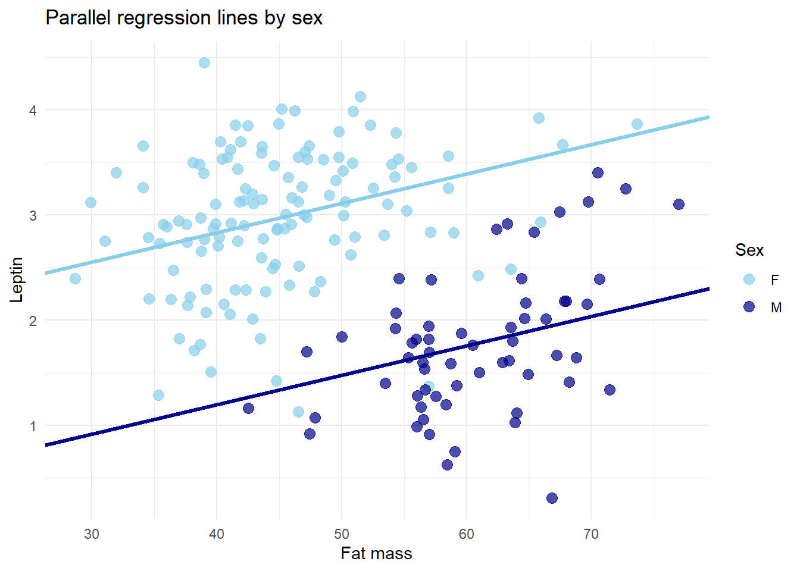
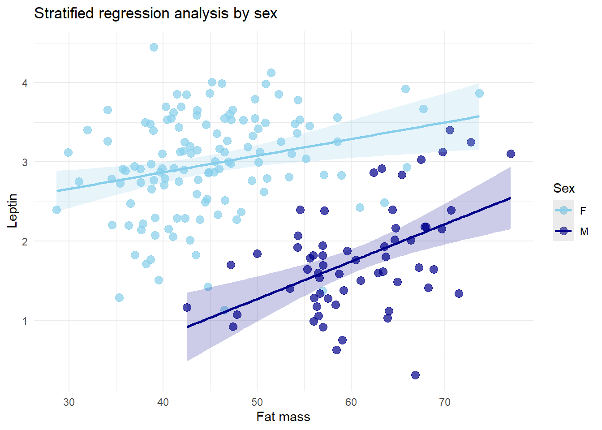
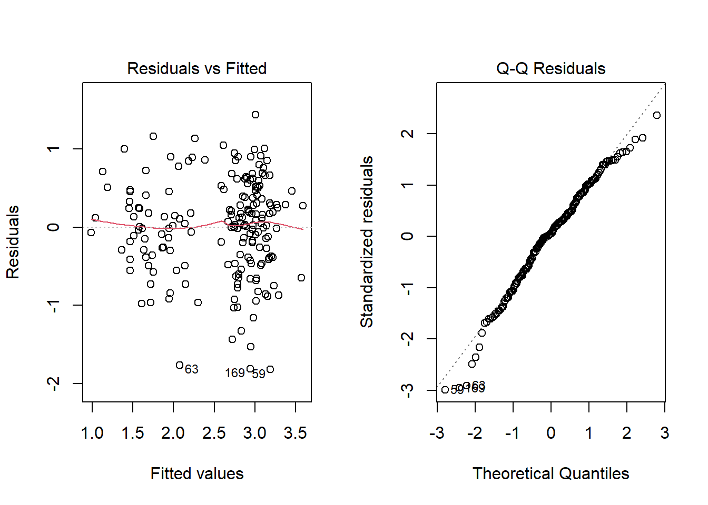

Chapter 18 Regression and Correlation
When analyzing a continuous variable, the conditions under which observations are made may also be continuous. Unlike categorical groups, clearly defined repeating conditions are not available, as a group is defined by a continuous variable whose values cannot be repeated exactly. For example, consider measuring the velocity of a galaxy and its distance from Earth. We might want to know whether the velocity depends on distance—that is, whether higher distances correspond to higher velocities, as evidence of the expansion of the Universe.
In this chapter, we will explore how to test the statistical dependence between two continuous random variables. We will introduce correlation as a parameter of a bivariate normal distribution and perform statistical tests on correlation, illustrating Hubble’s law.
We will also discuss how to assess statistical dependence when one variable is considered the outcome (dependent) and the other the predictor (independent). We will introduce regression analysis to test linear relationships, using, for example, leptin levels in blood as explained by fat mass. Finally, we will discuss multiple regression, which allows adjusting associations for additional variables that may confound the relationship. For instance, we will examine how monthly variations in atmospheric CO2 can obscure the yearly trend first reported by Keeling in his groundbreaking 1960s work.
Sex differences are often important modulatory factors in biomedical research. We will show how the effect of fat mass on leptin levels differs between sexes. In models relating a continuous outcome to a continuous predictor, interactions with additional variables can explain important variation in the outcome. We will conclude by introducing regression analysis with interactions, highlighting how these models capture more complex relationships between variables.
18.1 Correlations
In 1929, Edwin Hubble reported the distances and velocities of 22 nebulae, providing the first evidence for the expansion of the Universe (Hubble 1929). He measured distances using different techniques depending on the scale. For relatively nearby galaxies, he relied on supergiant pulsating stars, whose pulsation periods are related to their intrinsic luminosity. By comparing the observed luminosity to the predicted luminosity, Hubble could estimate the distance to the galaxy containing the star. Velocities were determined from the redshift of spectral lines: the faster a galaxy moves away, the more its light is shifted toward the red.
From a statistical perspective, Hubble’s data can be seen as a simultaneous measurement of two continuous variables—distance and velocity—for each galaxy. This dataset naturally leads to questions about the relationship between these variables, providing an early example of the kind of correlation and regression analysis that we discuss in this chapter.
Hubble’s random experiment is the simultaneous measurement of two continuous outcomes on a galaxy:
- The velocity of a galaxy, which has a probability density
\[Y \sim N(\mu_y, \sigma_y^2)\]
- The distance of the galaxy, with density
\[X \sim N(\mu_x, \sigma_x^2)\]
18.2 Data
One random experiment in Hubble’s study has two outcomes: \((velocity, distance)\).
Continuous variable (outcome of interest)
- \(velocity \in (-25.0, 1800.0)\) km/s
Continuous variable (explanatory variable)
- \(fatmass \in (0.62, 3.450)\) Mpc
Repeating the experiment \(n=21\) times, the data for look like
\[ \begin{array}{ccc} \mathbf{Object} & \mathbf{Velocity} & \mathbf{Distance} \\ 278 & 650 & 1.52 \\ 584 & 1800 & 3.45 \\ 936 & 1300 & 2.37 \\ 1023 & 300 & 0.62 \\ 1700 & 800 & 1.16 \\ 2681 & 700 & 1.42 \\ 2683 & 400 & 0.67 \\ 2841 & 600 & 1.24 \\ 3034 & 290 & 0.79 \\ 3115 & 600 & 1.00 \\ 3368 & 940 & 1.74 \\ 3379 & 810 & 1.49 \\ 3489 & 600 & 1.10 \\ 3521 & 730 & 1.27 \\ 3623 & 800 & 1.53 \\ 4111 & 800 & 1.79 \\ 4526 & 580 & 1.20 \\ 4565 & 1100 & 2.35 \\ 4594 & 1140 & 2.23 \\ 5005 & 900 & 2.06 \\ 5866 & 650 & 1.73 \\ \end{array} \]
and the plot of velocity against distance is

We see a clear linear relationship between the outcomes. How can we test for it? We need to formulate a hypothesis test on a parameter of a join probability distribution that represents this linear relationship, which we will call the correlation between the variables.
18.3 Normal bivariate
Let us consider that one random experiment of the study consists on drawing a pair of measurements of both the distance and and the velocity of a a single galaxy. We, therefore, have a random variable that is a pair of measurements that follows a probability distribution. We will assume that the distribution is the two-dimensional version of a normal probability density
\[(Y, X) \sim N(\mu_y, \sigma^2_y, \mu_x, \sigma^2_x, \rho)\]
This is function has five parameters. More explicitly the function is of the form
\[f(y,x)=\frac{1}{2\pi \sigma_y\sigma_x \sqrt{1-\rho^2}}e^{\frac{(y-\mu_y)^2}{\sigma_y^2}-\frac{2\rho(y-\mu_y)(x-\mu_x)}{\sigma_y\sigma_x}+\frac{(x-\mu_x)^2}{\sigma_x^2}}\]
and the parameters are \(\mu_y, \mu_x, \sigma^2_y, \sigma_x^2, \rho\). These are
The marginal mean and variance of \(Y\)
- \(\mu_y=E(Y)\), \(\sigma^2_y=V(Y)\)
The marginal mean and variance of \(X\)
- \(\mu_x=E(X)\), \(\sigma^2_x=V(X)\)
The correlation between \(X\) and \(Y\)
- \(\rho=\frac{E[(Y-\mu_y)(X-\mu_x)]}{\sigma_y\sigma_x}\)
\(\rho\) is called the correlation coefficient.
When we draw the probability density in two dimensions, we see that the marginal densities are the projections of the densities on each axis. Let us define the densities for each variable
\[X \sim N(\mu_x, \sigma_x^2)\]
and
\[Y \sim N(\mu_y, \sigma_y^2)\]
with its parameters. We can plot the 2D density as contour lines and the marginal densities on each axis

We can also plot the density in a 3D plot, where the \(Z\) axis is the value of the probability density.

looking at the contour plots of the 2D distribution, we see that the fifth parameter \(\rho\) defines the direction on which the ellipses are elongated (mayor axis).

The density is entirely determined by 5 parameters.
18.4 Estimators
We can derive the estimator of all 5 parameters, if we formulate the likelihood function
\[L=\Pi_{i=1}^n f(y_i,x_i; \mu_x, \mu_y, \sigma^2_x, \sigma_y^2, \rho)\] and maximize it for each parameter. As a result, we obtain the following estimators of the parameters.
The estimators for the means are the usual averages
- \(\bar{Y}=\frac{1}{n}\sum_{i=1}^n y_i\) estimates \(\mu_y\)
- \(\bar{X}=\frac{1}{n}\sum_{i=1}^n x_i\) estimates \(\mu_x\)
The maximum likelihood of the estimators for the variances are the uncorrected sample variances (dividing by \(n\))
- \(S^2_y=\frac{1}{n}\sum_{i=1}^n (y_i-\bar{y})^2\) estimates \(\sigma^2_y\)
- \(S^2_x=\frac{1}{n}\sum_{i=1}^n (x_i-\bar{x})^2\) estimates \(\sigma^2_x\)
The estimator for the correlation is
- \(R=\frac{\sum_{i=0}^n(X_i-\bar{X})(Y_i-\bar{Y})}{\sqrt{\sum_{i=1}^n(X_i-\bar{X})^2}\sqrt{\sum_{i=1}^n(Y_i-\bar{Y})^2}}\) estimates \(\rho\).
18.5 Correlation coefficient
\(R\) is then a statistics that can be computed from the data and we can take one value as an estimate of \(\rho\). The sampling distribution of \(R\) can be obtained if we transform it into a new variable (Fisher’s z transformation)
\[Z=\frac{1}{2}\ln (\frac{1+R}{1-R})\] The new variable \(Z\) is a normal variable
\[Z \sim_{aprox} N(\frac{1}{2}\ln (\frac{1+\rho}{1-\rho}), \frac{1}{n-3})\]
with mean \(\frac{1}{2}\ln (\frac{1+\rho}{1-\rho})\) and variance \(\frac{1}{n-3}\).
As \(R\) estimates \(\rho\) we have that
If \(R\) is near \(0\) then there is no linear relationship between \(y\) and \(x\) (the mayor and minor axes of the 2D plot are the x and y axes).
If \(R\) is near \(1\) there is strong evidence of a linear relationship between \(y\) and \(x\) (the mayor axis does not align with neither the x or the y axis).
\(R\) is then a measure of the statistical dependence between \(Y\) and \(X\). We can use it to test that hypothesis.
18.6 Hypothesis contrast
The hypothesis contrast for the independence on the relationship between \(Y\) and \(X\) that follow a bivariate normal distribution can be formulated as
\(H_0: \rho=0\) (null hypothesis). Therefore, \(Y\) and \(X\) are consider statistically independent and consequently \(f(y,x)=f(x)f(y)\) (the joint probability is the product of the marginals)
\(H_1: \rho \neq 0\) (alternative hypothesis). Therefore, \(Y\) and \(X\) are statistically dependent.
We then use the statistic \(R\) to test whether there is a dependency between \(Y\) and \(X\). For testing the hypothesis contrast, we take the observed value of \(R\)
\[r_{obs}=\hat{\rho}=\frac{\sum_{i=0}^n(x_i-\bar{x})(y_i-\bar{y})}{\sqrt{\sum_{i=1}^n(x_i-\bar{x})^2}\sqrt{\sum_{i=1}^n(y_i-\bar{y})^2}}\]
and compute its \(pvalue\). That is the probability that we obtain a larger value if we repeat the sample when the null hypothesis is true. Under the null hypothesis \(\rho=0\), we then compute the two-tailed \(pvalue\)
\[pvalue=2(1- F(|r_{obs}|)= 2(1- F_{N(0, 1/(n-3 )})(|z_{obs}|) \]
where
\[Z \sim_{aprox} N(0, \frac{1}{n-3})\] Example (Hubble’s law)
For Hubble’s data, we have that the observed correlation coefficient is \(r_{obs}=0.956\) and its transformed value
\[z_{obs}=ln((1+0.956)/(1-0.956))/2=1.89\]
The \(pvalue\) is therefore
\[pvalue=2(1- F_{N(0,1/18)}(1.89))=1.4\times 10^{-11}\]
Therefore, since it is lower than \(\alpha=0.05\), we reject the null hypothesis that galaxy velocity and distance are independent. The correlation is strongly positive, showing that as more distance galaxies are observed, we expect that they are moving away from the Earth and between each other at faster speeds. This result clearly implies that at some time in the past all the mass of the Universe was close together, perhaps at a point before it exploded in a Big Bang.
In Python and R:
from scipy import stats
r, p_value = stats.pearsonr(dat["velocity"], dat["distance"])
R:
cor.test(dat$velocity, dat$distance)Example (leptin and fat mass)
Leptin is a hormone produced by adipose tissue. We want to study the serum leptin levels in the adult population. Zhang et al. studied the gene expression of patients with metabolic syndrome, for which one of its characteristics is high weight (Zhang et al. 2013). They recorded relevant data of 188 individuals that included leptin levels in blood, lean fatmass(kg), age and sex. Data is available at the public repository GEO and can be accessed from R
We can use this publicly available data to inquiry on the relationship between fatmas and leptin and contrast it with expected results from previous studies, although this was not the main objective of the study.
From this data, we assume that the levels of fatmass (\(X\)) and (log) leptin in blood \(Y\) are random variables that have a join bivarite normal distribution
\[(X, Y) \sim N(\mu_x, \mu_y, \sigma_x^2, \sigma_y^2, \rho)\] We are interested in finding whether letpin levels depend on the levels of fatmass. Leptin is a hormone released from adipose tissue. Therefore, as more fatmas we expect more leptin in ciculating blood that regulate regulates satiety. The breaking of satiety regulation by leptin may be a cause for obesity.
One random experiment in our study has two outcomes: \((leptin, fatmass)\).
Continuous variable (outcome of interest)
- \(lepting \in (0, 5)\)
Continuous variable (explanatory variable)
- \(fatmass \in (20,80)\)
Repeating the experiment \(n=188\) times, the data for the first five repetitions look like
\[ \begin{array}{ccc} \mathbf{Subject} & \mathbf{Leptin} & \mathbf{Fatmass} \\ 1 & 3.355677 & 45.721 \\ 2 & 2.272126 & 43.895 \\ 3 & 1.071584 & 47.871 \\ 4 & 3.921082 & 65.801 \\ 5 & 1.536867 & 56.644 \\ ... & ... & ... \\ \end{array} \]
For this data, we have that the observed correlation coefficient is \(r_{obs}=-0.276\) and its transformed value
\[z_{obs}=\frac{1}{2}\ln(\frac{1-0.276}{1+0.276})=-0.284\]
The \(pvalue\) is therefore
\[pvalue=2(1- F_{N(0,1/185)}(0.284))=0.0001\]
Therefore, since it is lower than \(\alpha=0.05\), we reject the null hypothesis that leptin and fat mass are independent. Note that leptin and fat mass are weakly correlated and negatively \(r=-0.28\), although the correlation is highly significant because \(pvalue=0.0001\).
We should take this result with caution:
Looking at the data, we see the fitted 2D probability function with negative correlation, but the marginal histograms are not quite normally distributed.
From literature, we know that as we increase fat mass, we should obtain more leptin, not the contrary, as it is released from adipose tissue.

How can we improve our analysis, so that our results are as expected?
18.7 Regression analysis
To determine if \(leptin\) and \(fatmass\) are statistically independent, we can rather ask: What is the probability density of leptin at a given value of fat mass. Does the density changes when we change the value of fat mass? We will then consider the that the continuous fat mass value is a condition for leptin, or that changing fat mass will produce a change in leptin levels, as it is the tissue that releases it. We call the condition variable the explanatory or independent variable, and the outcome of interest the explained or dependent variable.
Let us explore first the independence of two bivariate normal variables in terms of conditinal probabilities. Remember, two variables \(Y\) and \(X\) are independent if
\[P(Y|X)=P(Y)\]
Therefore, we can calculate the conditional probability density of \(Y\) (leptin) given \(X\) (fat mass) from the definition
\[f(y|x)=\frac{f(y,x)}{f(y)} =N(\mu_{y|x}, \sigma^2_{y|x})\]
This turns up to be a normal distribution. The conditional probability density is the profile, or a slice, of the 2D distribution at a given value of \(x\).

The conditional density at a given point is the dotted line in red. Its mean is the red dot and, in terms of the parameter of the binomial normal density, is given by
\[\mu_{y|x}=\mu_y+\frac{\sigma_y\rho}{\sigma_x}(x-\mu_x)\]
If we manipulate this equation, we see that the conditional mean is a linear function of \(x\)
\[\mu_{y|x}=(\mu_y-\mu_x \frac{\sigma_y\rho}{\sigma_x})+\frac{\sigma_y \rho}{\sigma_x} x=\alpha + \beta x\]
where \(\alpha=\mu_y-\mu_x \beta\) and \(\beta=\frac{\sigma_y \rho}{\sigma_x}\). This line is called a regression line (red dotted line in the plot). That is, when we move along the \(X\) axis, the conditional mean of \(Y\) moves linearly.
The variance of the conditional density is
\[\sigma^2_{y|x}= \sigma_y^2(1-\rho^2)\] Solving for \(\rho^2\), we have
\[\rho^2=\frac{\sigma_y^2-\sigma^2_{y|x}}{\sigma_y^2} \] \(\rho^2\) is then the proportion of the total variance that is explained by the regression line. For instance, \(\rho^2=1\) when the conditional variability \(\sigma^2_{y|x}\) is zero ans the conditional distribution shinks to its mean; that is, all the observations fall on the regression line.
18.8 Linear model
Consider the linear model for the values of \(Y\) conditioned to the value of \(x_i\)
\[Y_i = \alpha + \beta x_i +\varepsilon_{i}\]
\(i\) is the index of the observation from \((1,...n)\), typically one for every \(x_i\) as \(x_i\) is continuous, and \(\varepsilon_{i}\) is the random error, a random variable with expected value \(E(\varepsilon_{i})=0\) and variance \(V(\varepsilon_{i})=\sigma_{y|x}^2\). The expected value of \(Y_{x_i}\) is the regression line
\[\mu_{y|x_i}=\alpha + \beta x_i\] with
\[\alpha=\mu_y-\beta\mu_x\] and
\[\beta=\rho\frac{\sigma_y}{\sigma_x}\]
18.9 Hypothesis contrast
Null hypothesis:
- \(H_0: \beta=0\). \(Y\) and \(X\) are statistically independent, and therefore \(f(y|x)=f(y)\). If this is the case then the regression line is flat, as the conditional density is the same no matter the point of the slice. The null hypothesis model is shown in the plot

Note that the marginal probability (projection of the probability on the \(y\) axis) would be identical to all the conditional probabilities, which is the condition for independence.
Alternative hypothesis:
- \(H_1: \beta\neq 0\). \(Y\) and \(X\) are statistically dependent. If this is the case then we have the following model

Note that the marginal probability would be the combination of the conditional probabilities.
18.10 Estimators
\(\beta\) is therefore our parameter of interest and we need a probability distribution to test its hypothesis contrast
- \(\beta=\rho\frac{\sigma_y}{\sigma_x}\) suggest the estimator for \(\beta\)
\[B=\frac{\sum_{i=1}^m(x_i-\bar{x})(Y_i-\bar{Y})}{\sum_{i=1}^n(x_i-\bar{x})^2}\]
- \(\alpha=\mu_y-\beta\mu_x\) suggests the estimator for \(\alpha\)
\[A=\bar{Y}- \hat{\beta}\bar{x}\]
The estimators \(A\) and \(B\) for \(\alpha\) and \(\beta\) can formally be derived from minimizing the sum of squares for the error given \(x_i\)
\[SSE=\sum_{i=1}^n(Y_i-\bar{Y_i})^2=\sum_{i=1}^n(Y_i-\alpha + \beta x_i)^2\] with respect to \(\alpha\) and \(\beta\). If \(\bar{Y_i}\) is normal then
\[B \sim N(\beta, \frac{n\sigma^2_y}{{(n-2)s^2_x}})\]
with mean \(E(B)=\beta\) and, therefore, it is an unbiased estimator.
18.11 Hypothesis testing
The standardized error, we make when we estimate \(\beta\) with \(B\)
\[\frac{B -\beta}{\sqrt{\frac{ns^2_y}{{(n-2)s^2_x}}}} \sim t(n-2)\] that follows a t-distribution with \(n-2\) degrees of freedom. If the null hypothesis is true then \(\beta=0\) and the observed error is
\[t_{obs}= \frac{\hat{\beta}}{\sqrt{\frac{ns^2_y}{{(n-2)s^2_x}}}} \sim t(n-2)\] Where \(\hat{\beta}\) is the observed value of the random variable \(B\).
Example (leptin and fatmass)
We can perform the statistical test in Pyhton and R:
Python:
import pandas as pd
from scipy.stats import pearsonr
##loading dat
model = ols('leptin ~ fatmass', data=data).fit()
print(model.summary())
R:
##loading dat
summary(lm(leptin ~ fatmass, data=dat))The outut is a table like
\[ \begin{array}{lcccc} & \mathbf{Estimate} & \mathbf{Std.\ Error} & \mathbf{t\ value} & \mathbf{Pr(>|t|)} \\ \mathbf{(Intercept)} & 3.720 & 0.295 & 12.604 & <2 \times 10^{-16} \ ^{***} \\ \mathbf{fatmass} & -0.0226 & 0.00576 & -3.926 & 0.000121 \ ^{***} \\ \end{array} \]
The observed value of \(B\) is
\[\hat{\beta}= \frac{\sum_{i=1}^m(x_i-\bar{x})(y_i-\bar{y})}{\sum_{i=1}^n(x_i-\bar{x})^2}= -0.02262\] and the observed value of \(A\) is
\[\hat{\alpha}=\bar{y}-\hat{\beta}\bar{x}= 3.72012\]
Only \(7\%\) of the variability is explained by the regression line, since (R-squared: 0.07653)
\[r_{obs}^2=0.07653\]
We can draw the regression line

We see that the regression line is negative and there is dispersion about it. Remember that the correct way to interpret the line is to think that these are the mean values of \(Y\) conditioned on \(X\). The bands, are the contious confidence intervals at a fix value of \(X\).
18.12 Stratified analysis
We can include other conditions in the regression analysis. In general, it is important to adjust for other factors that we believe are correlated with the outcome \(Y\) and the condition \(x\), as they may explain part of the association. These are called confounders.
Example (Fat mass and leptin) In the datudy of Zhang and colleageues (Zhang et al. 2013) they measure othre determinats of leptin levels, such as sex and age. The leptin level may have multiple covariates or explanatory variables that can affect the association between fat mass and letpin. The first observations of the complete data sex looks like
\[ \begin{array}{ccccc} \mathbf{Subject} & \mathbf{Leptin} & \mathbf{Fatmass} & \mathbf{Sex} & \mathbf{Age} \\ 1 & 3.356 & 45.721 & F & 45 \\ 2 & 2.272 & 43.895 & F & 77 \\ 3 & 1.072 & 47.871 & M & 79 \\ 4 & 3.921 & 65.801 & F & 58 \\ 5 & 1.537 & 56.644 & M & 42 \\ \vdots & \vdots & \vdots & \vdots & \vdots \\ \end{array} \]
Consider the previous regression and color the points according to their sex

We clearly see that the negative association between leptin and fat mass is given by the effect of sex. As males have lower leptin levels and higher fat mass then the negative correlation between leptin and fat mass is due to sex.
18.13 Multiple Regression
The linear regression can be extended to include several number of factors. Consider the linear model with one additional factor
\[Y_{jr} = \alpha + \beta x_j +\gamma z_{r}+\varepsilon_{jr}\]
Here, our effect of interest is the coefficient \(\beta\) of \(x_i\) (leptin) and we want to adjust for the effect of \(z_j\) (sex). The model is similar to the linear model we used for ANOVA, only that now the treatment effects are continuous and depend on the variable \(X\).
Running the model in Python or R we obtain
Python:
import pandas as pd
from scipy.stats import pearsonr
from statsmodels.formula.api import ols
model = ols('leptin ~ fatmass + sex', data=dat).fit()
print(model.summary())
R:
summary(lm(leptin ~ fatmass + sex, data=dat))
\[ \begin{array}{lcccc} & \mathbf{Estimate} & \mathbf{Std.\ Error} & \mathbf{t\ value} & \mathbf{Pr(>|t|)} \\ \mathbf{(Intercept)} & 1.716 & 0.277 & 6.187 & 3.84 \times 10^{-9} \ ^{***} \\ \mathbf{fatmass} & 0.0279 & 0.00604 & 4.630 & 6.88 \times 10^{-6} \ ^{***} \\ \mathbf{sexM} & -1.636 & 0.136 & -12.023 & <2 \times 10^{-16} \ ^{***} \\ \end{array} \]
Therefore, we observe that there is a positive increase in leptin when we adjust for sex \(\hat{\beta}=4.63\), \(pvalue=6.88 \times 10^{-6}\). In addition males have a negative association with leptin, compared with women \(\gamma=-12.02\), \(pvalue<2 \times 10^{-16}\). But within each sex the association is positive as expected. The regression lines for each sex will be parallel but displaced by the average effect of changing from female (reference) to male.

Example(C02 concentration in atmosphere)
Perhaps one of the most consequential observations of the second half of the 20 century was reported by Keeling in 1960 (Keeling 1960). Using continuous recording within less than three years (1958-1960), and over different geographic regions and methods, he showed that the levels of CO2 were significantly increasing in the atmosphere. He started CO2 survey in Hawaii in Mauna Loa, which have continue for 66 years. The data from on this station from his 1960 paper is
\[ \begin{array}{cccc} \mathbf{Observation} & \mathbf{CO2 (ppm)} & \mathbf{Month} & \mathbf{Year} \\ 1 & 313.4 & 3 & 1958 \\ 2 & 314.4 & 4 & 1958 \\ 3 & 315.1 & 5 & 1958 \\ 5 & 312.9 & 7 & 1958 \\ 6 & 312.3 & 8 & 1958 \\ 7 & 311.6 & 9 & 1958 \\ 9 & 310.6 & 11 & 1958 \\ 10 & 311.6 & 12 & 1958 \\ 11 & 312.5 & 1 & 1959 \\ 12 & 313.5 & 2 & 1959 \\ 13 & 314.0 & 3 & 1959 \\ 14 & 314.7 & 4 & 1959 \\ 15 & 315.3 & 5 & 1959 \\ 16 & 315.2 & 6 & 1959 \\ 17 & 313.5 & 7 & 1959 \\ 18 & 311.9 & 8 & 1959 \\ 19 & 311.1 & 9 & 1959 \\ 20 & 310.5 & 10 & 1959 \\ 21 & 311.8 & 11 & 1959 \\ 22 & 312.5 & 12 & 1959 \\ 23 & 313.4 & 1 & 1960 \\ 24 & 313.7 & 2 & 1960 \\ 25 & 314.4 & 3 & 1960 \\ \end{array} \] The plot of the observations per month though out years (now known as Kelling plot is)

Can we say from this data that C02 concentrations are getting increasing in Mauna Loa thoughout the years?
Finding a year trend from the inspection of the data is difficult because the variations per month are large, in comparison with the year variation. Maximum CO2 coincides with summer in the northern hemisphere when vegetation is the greenest, and vegetation respiration maximum. Therefore, the monthly variation is a confounding factor for the regressing CO2 concentration on years. The model we are interested in fitting is
\[Y_{year, month} = \alpha + \beta x_{year} + z_{month}+\varepsilon_{year, month}\] where \(Y\) is the CO2 concentrations (outcome), \(\beta\) is the effect of years (explanatory variable), and \(z_{month}\) is the effect of the month (covariate). The covariate month is better encoded as categorical as we expect each month to have its own specific effect (with respect to January). Encoded as numeric the model will fit pair-wise comarisons between January and each month, as 11 covariates for the effect of year.
The code in if Python and R
Pyhton:
import pandas as pd
import statsmodels.api as sm
import statsmodels.formula.api as smf
df = pd.DataFrame({
'y': [313.4, 314.4, 315.1, 312.9, 312.3, 311.6, 310.6, 311.6,
312.5, 313.5, 314.0, 314.7, 315.3, 315.2, 313.5, 311.9,
311.1, 310.5, 311.8, 312.5, 313.4, 313.7, 314.4],
'month': [3,4,5,7,8,9,11,12,1,2,3,4,5,6,7,8,9,10,11,12,1,2,3],
'year': [1958,1958,1958,1958,1958,1958,1958,1958,
1959,1959,1959,1959,1959,1959,1959,1959,
1959,1959,1959,1959,1960,1960,1960]
})
model = smf.ols('y ~ year + C(month)', data=df).fit()
print(model.summary())
R:
df <- data.frame(
y = c(313.4, 314.4, 315.1, 312.9, 312.3, 311.6, 310.6, 311.6,
312.5, 313.5, 314.0, 314.7, 315.3, 315.2, 313.5, 311.9,
311.1, 310.5, 311.8, 312.5, 313.4, 313.7, 314.4),
month = c(3,4,5,7,8,9,11,12,1,2,3,4,5,6,7,8,9,10,11,12,1,2,3),
year = c(1958,1958,1958,1958,1958,1958,1958,1958,
1959,1959,1959,1959,1959,1959,1959,1959,
1959,1959,1959,1959,1960,1960,1960)
)
summary(lm(y~year+factor(month), data=df))
with results
\[ \begin{array}{lcccc} & \mathbf{Estimate} & \mathbf{Std.\ Error} & \mathbf{t\ value} & \mathbf{Pr(>|t|)} \\ \mathbf{(Intercept)} & -500.9962 & 286.0446 & -1.751 & 0.110420 \\ \mathbf{year} & 0.4154 & 0.1460 & 2.846 & 0.017383 \ ^{*} \\ \mathbf{factor(month)2} & 0.6500 & 0.3722 & 1.746 & 0.111309 \\ \mathbf{factor(month)3} & 1.1910 & 0.3475 & 3.427 & 0.006466 \ ^{**} \\ \mathbf{factor(month)4} & 2.0154 & 0.3998 & 5.041 & 0.000506 \ ^{***} \\ \mathbf{factor(month)5} & 2.6654 & 0.3998 & 6.667 & 5.59 \times 10^{-5} \ ^{***} \\ \mathbf{factor(month)6} & 2.4577 & 0.4616 & 5.324 & 0.000336 \ ^{***} \\ \mathbf{factor(month)7} & 0.6654 & 0.3998 & 1.664 & 0.127009 \\ \mathbf{factor(month)8} & -0.4346 & 0.3998 & -1.087 & 0.302483 \\ \mathbf{factor(month)9} & -1.1846 & 0.3998 & -2.963 & 0.014211 \ ^{*} \\ \mathbf{factor(month)10}& -2.2423 & 0.4616 & -4.857 & 0.000664 \ ^{***} \\ \mathbf{factor(month)11}& -1.3346 & 0.3998 & -3.338 & 0.007511 \ ^{**} \\ \mathbf{factor(month)12}& -0.4846 & 0.3998 & -1.212 & 0.253294 \\ \end{array} \]
We see an significant increase in \(\hat{\beta}=0.4154\) ppm per year \(pvalue=0.01\), adjusting for month variation. While this was preliminary data on global CO2 emissions, a year plot of the residuals from fitting the CO2 concentrations on moths clearly shows the trend. Additionally, continuous monitoring at Mauna Loa for over 66 year reveals how the underlying yearly trend has largely superseded the monthly variations.

18.14 Multiple Regression interaction
Sometimes the explanatory variable has an effect that is modulated by a covariate. That is, the strngth of the effect depends on another condition.
Example (Fat mass, letptin and sex)
For the association between fat mass and leptin we can fit the regression model separating, or stratifying, by sex. We find that the strength of the association between leptin and fat mass depends on sex. That is, the slope of the regression line changes between sexes.

We can furthermore include interactions between conditions in the regression.
Consider the linear model
\[Y_{jr} = \alpha + \beta x_{j} +\gamma z_{r} + \delta (xz)_{jr} +\varepsilon_{jr}\] The parameter \(\delta\) will add a contribution to the slope \(\beta\) that is specific to the condition \(r\). For instance, if \(z_i \in (0,1)\) then when \(z=0\) the coefficient of \(x_i\) is \(\beta\). But when \(z=1\) the coefficient of \(x_i\) is \(\beta+\gamma\).
Example (Fat mass and leptin)
In the fat mass and leptin relationship, if \(z\) is sex, then \(\gamma\) will test the differences in \(\beta\)s between males and females. We can further adjust by age.
\[Y_{jrs} = \alpha + \beta\times fatmass_{j} +\gamma\times sex_{r} + \delta\times (fatmass\times sex)_{jr} + \epsilon_s age+\varepsilon_{jrs}\] We can re-fit the model with the interaction term
Python:
import pandas as pd
from scipy.stats import pearsonr
model = ols('leptin ~ fatmass*sex + age', data=dat).fit()
print(model.summary())
R:
summary(lm(leptin ~ fatmass*sex + age, data=dat))with th efollowing results
\[ \begin{array}{lcccc} & \mathbf{Estimate} & \mathbf{Std.\ Error} & \mathbf{t\ value} & \mathbf{Pr(>|t|)} \\ \mathbf{(Intercept)} & 1.800 & 0.337 & 5.337 & 2.77 \times 10^{-7} \ ^{***} \\ \mathbf{fatmass} & 0.0200 & 0.00695 & 2.881 & 0.00443 \ ^{**} \\ \mathbf{sexM} & -3.218 & 0.775 & -4.151 & 5.07 \times 10^{-5} \ ^{***} \\ \mathbf{age} & 0.00585 & 0.00294 & 1.989 & 0.0482 \ ^{*} \\ \mathbf{fatmass{:}sexM} & 0.0284 & 0.0135 & 2.104 & 0.0368 \ ^{*} \\ \end{array} \]
The data suggest a steeper increase of leptin with body fat in males than in females (interaction: \(0.028427\), \(pvalue=0.03\)), as we saw in the figures of the stratified analysis. A positive and significant interaction means that the slope for males is higher than the slope for females. The effect of fatmass on letpin levels is stronger in males.
We also observe a signification effect of age on leptin levels. As the coefficient is a slope, we can say that for a year increase in the age of the patient, we see a significant increase in \(0.005\) units of leptin levels (\(pvalue=0.048\)). Therefore age is also a contributing factor of leptin levels. The model now explains \(50\%\) of the variance as \(R^2=0.5\).
18.15 Model diagnostics
All linear models have been made on the supposition that
Errors are distributed normally
Errors have the same variance
There are a number of plots to check that at least the data is consistent with these suppositions. In particular, we are interested to see that the residuals distribute symmetrically against the fitted values, revealing equal variance (homoscedasticity). We also want to check that the points in a quantile-quantile (QQ) plot fall in the line, revealing how close the residuals distribute normally.
R:
mod <- lm(leptin ~ fatmass * sex + age, data = dat)
plot(mod, which = 1, main = "Residuals vs Fitted")
plot(mod, which = 2, main = "Normal Q-Q")

The residuals versus fitted values plot shows that the residuals are fairly randomly scattered around zero, with no strong pattern, suggesting that the linear model fits the data reasonably well and that the assumption of linearity is broadly satisfied. While there may be a slight concentration of residuals at certain fitted values, it is not pronounced. The Normal Q-Q plot indicates that the residuals are approximately normally distributed, as most points follow the reference line given by the nornal quantiles, with only minor deviations at the extremes, which are typical in real datasets. Overall, the model age appears to provide a reasonable fit, with assumptions of linearity and normality largely met.
18.16 Questions
1) We perform a regression analysis when we have
\(\qquad\)a: one categorical variable; \(\qquad\)b: two categorical variables; \(\qquad\)c: one continuous random variable; \(\qquad\)d: two continuous random variables;
2) The correlation coefficient \(\rho\) is
\(\qquad\)a: a parameter of a 2D probability density; \(\qquad\)b: a statistic of the relationship between two continuous variables; \(\qquad\)c: the linear coefficient btween of two variables; \(\qquad\)d: the variance explained by one continuous variable on other;
3) \(\beta\) in the linear model
\[Y_{x_i} = \alpha + \beta x_i +E_{i}\]
\(\qquad\)a: is a statistic that measure the linear relationship between \(x\) and \(y\); \(\qquad\)b: is zero for the null hypothesis; \(\qquad\)c: is a parameter with expected value of zero; \(\qquad\)d: is the correlation between \(x\) and \(y\)
4) Why do we adjust for a variable in a regression coefficient?
\(\qquad\)a: to test the interaction between the variable and \(x\); \(\qquad\)b: to stratify the relationship between \(x\) and \(y\); \(\qquad\)c: to remove confounding in the relationship between \(x\) and \(y\); \(\qquad\)d: to improve the significance of the relationship between \(x\) and \(y\);
5) The regression analysis assumes that
\(\qquad\)a: the errors have mean 0 and equal variances; \(\qquad\)b: the errors distribute normally with mean 0 and equal variances; \(\qquad\)c: the errors distribute normally with different mean and equal variances; \(\qquad\)d: the errors distribute normally with different mean and different variances;
18.17 Practice
18.17.0.1 Practice
Load misophonia data https://alejandro-isglobal.github.io/SDA/data/data_0.txt
We have four measures of anxiety:
- Trait: ansiedad.rasgo (are you an anxious person?) continuous:0-100
- State: ansiedad.estado (are you currently feeling anxious?) continuous:0-100
- Diagnosed: ansiedad.medicada (have you been diagnosed with an anxiety disorder?) binary (si, no)
- Excess: ansiedad.dif (difference between State and Trait)
We formulate the following hypothesis:
Participants who enrolled in the study had an increased level of anxiety from their baseline (trait) that is related to their:
- age
- sex
- anxiety state.
We are interested in the variable anxiety.dif, that is the observed excess of anxiety from the trait
\(excess = state - trait\)
Answer the following questions:
Are the state and trait of anxiety correlated?
Is excess in anxiety higher in older people?
Is excess in anxiety higher in older people after adjusting by sex?
Is the interaction between age and sex significant on excess anxiety?